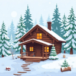

What players see
> /polli npc create Greta blacksmith
[Polli] Spawned Greta (blacksmith). Right-click to talk.
[Polli] You are now talking to Greta. Type in chat, or bye to stop.
Greta: Ah, traveler—keep your boots off my forge floor. Name’s Greta, blacksmith of this village; if you’ve got iron to spare, I’ll gladly help you hammer it into something worth your while.
Steve_Tester > Greta: Can you fix my iron pickaxe? What do you need for it?
Greta: Aye, I can fix it—bring the iron pickaxe and tell me what it needs: if it’s just durability, I’ll need extra iron (and maybe some coal/XP to mend it).
Steve_Tester > Greta: Thanks! And what is better, diamond or netherite?
Greta: Diamond’s tough, but netherite’s the real prize—stronger and more resistant, and it laughs at lava better too.
> /polli image a cozy wooden cabin in a snowy pine forest, pixel art
[Polli] Painting "a cozy wooden cabin in a snowy pine forest, pixel art" with flux...
[Polli] Your map is ready. Put it in an item frame to show it off!

The real 128×128 map from that runFeatures
/polli npc create Jack a grumpy pirate./polli image <prompt> paints a filled map for an item frame. Saved across restarts./polli models shows them in game.config.yml. Cooldowns, token caps and permissions keep spending in check.Install
- Download the latest PolliCraft jar and drop it into
plugins/. - Start the server once to create
plugins/PolliCraft/config.yml. - Create a key at enter.pollinations.ai/keys and paste it in:
api-key: "sk_..." text-model: "openai" image-model: "flux"
- Run
/polli reloadand try/polli ask hello.